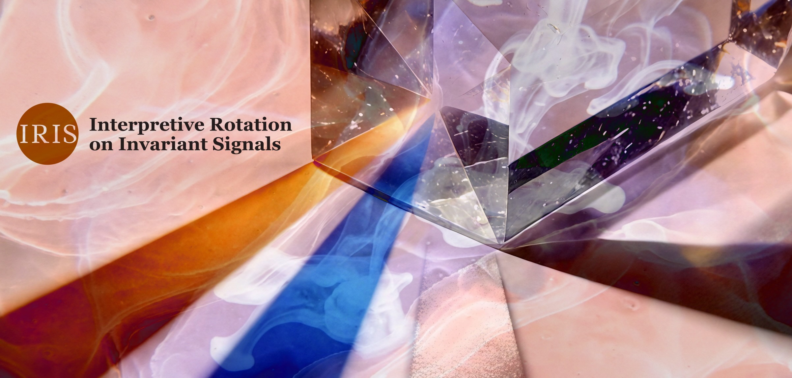

IRIS Method
A methodological research artefact in interpretive epistemology

IRIS (Interpretive Rotation on Invariant Signals) sits in the "Unexpected artefacts" collection because it did not begin as a plan to develop a method. It began as a practical problem: during preparation for doctoral research into how constraint systems convert uncertainty into authoritative closure, I needed a way to hold evidence constant and isolate what the interpretive framework itself was doing. The surprise was that what emerged — a five-parameter grammar notation and a controlled rotation protocol — turned out to be a self-contained analytical tool with applications well beyond the original research context.
IRIS is therefore best understood as a research object that happens to be methodological: a structured protocol for making visible the processing rules through which shared evidence becomes divergent interpretation.
What the method does
IRIS formalises interpretive frameworks as grammars — rule-bound processing systems defined by five parameters:
G = (V, S, W, C, A)
Primary organising principle, signal selection rules, weighting priority, causal chain type, and admissible closure. The analyst holds the empirical input constant, rotates the grammar, and observes what changes in the output.
The method does not adjudicate between interpretations. It makes the processing rules visible — the selection, weighting, and closure mechanisms that produce conclusions — so that divergence can be diagnosed rather than merely experienced.
The worked example
The preprint demonstrates the method on the U.S. Supreme Court's Citizens United v. FEC decision (2010). Four signals are held constant across three grammars (egalitarian, civilisational, structural). The same evidence enters each grammar and produces a different analytical object: "oligarchic capture," "elite betrayal of the covenant," and "a phase-transition indicator."
The most revealing moment is how a single signal — the Gilens and Page (2014) finding on policy responsiveness — is processed differently by each grammar: core evidence for one, a subordinate symptom for another, and a neutral data point for the third. The same empirical finding, three different analytical roles, depending entirely on which processing rules are in operation.
The reflexive apparatus
The method requires the analyst to declare their own "home grammar" before beginning (Step O), using the same parametric form applied to the grammars under study. This makes the analyst's interpretive position visible and auditable rather than hidden. When operating a grammar that is not their own, the analyst's processing carries traces of their home grammar — a phenomenon the method calls ventriloquism. Rather than treating this as a flaw, the method treats it as data: a pattern to be documented and scrutinised.
Preliminary feasibility work
The method's operational feasibility was explored through a preliminary programme in which 15 distinctively prompted large-language-model instances processed 20 case studies across 17 domains. The programme tested whether IRIS-style architectures could be retrieved from LLM outputs without using IRIS terminology. The results suggest the grammar schema captures recognisable patterns in interpretive discourse, though the programme does not constitute empirical validation — human-participant replication is the necessary next stage.
Context
IRIS is the methodological foundation of my doctoral research, which examines how constraint systems — from divination and strategy games to algorithmic risk scoring and credit assessment — convert uncertainty into authoritative closure along an interpretive–syntactic spectrum. The method is the interpretive-political instance of this broader programme.
The preprint positions IRIS relative to discourse analysis, frame analysis, Q-methodology, argumentation theory, analytical pluralism, multiverse analysis, orders of worth, social epistemology, and epistemic injustice. It draws on work by Kuhn, Foucault, Hacking, Mannheim, Fleck, Haraway, Boltanski and Thévenot, Mol, Fricker, and others.
IRIS belongs here because it's a concrete example of a wider RDCJ theme: that the instruments of observation participate in producing the observations they deliver — and that making this participation visible is a precondition for understanding why the same world produces such different accounts of itself.
This page situates the artefact; the preprint establishes its formal architecture and theoretical commitments; and the companion materials provide the operational protocols for applying it. The core method as presented in the preprint is sufficient for provisional application and independent evaluation.